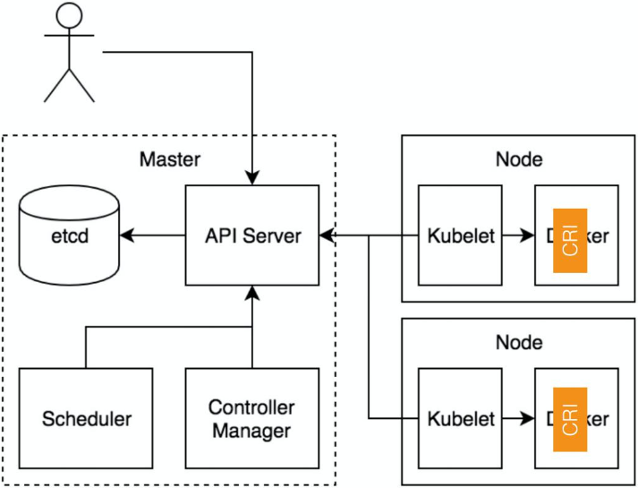
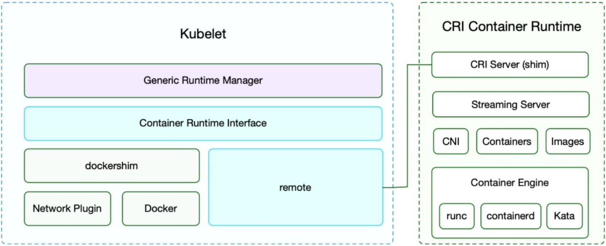
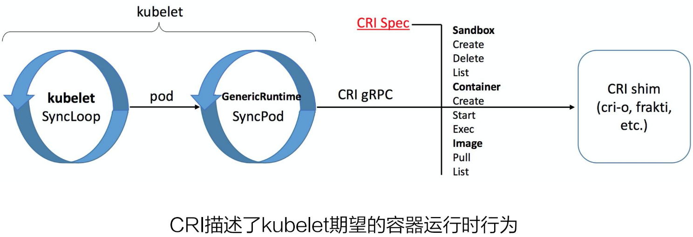
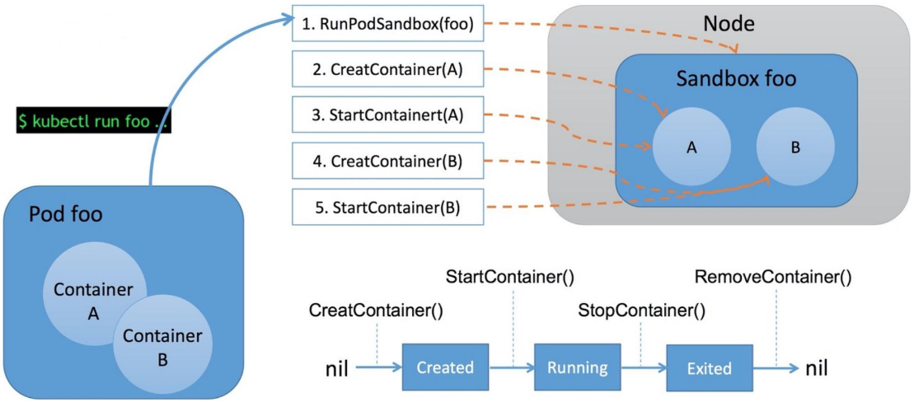
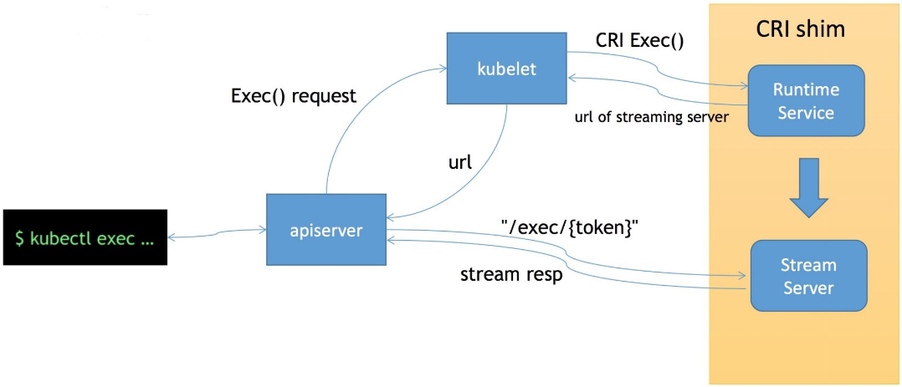
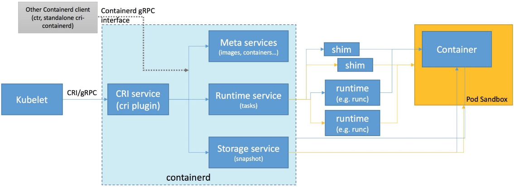
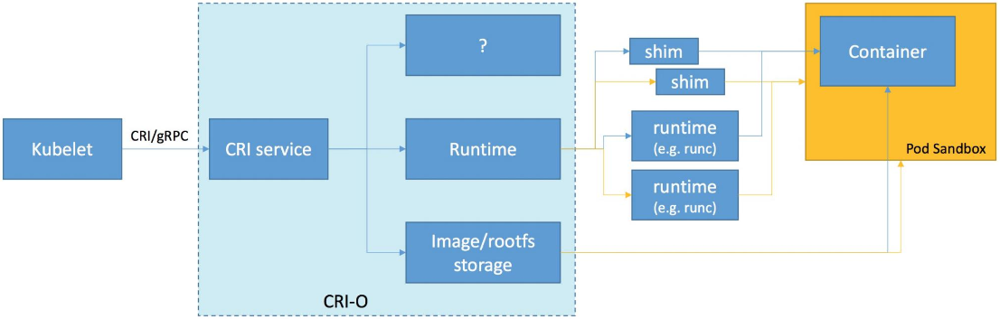

CRI 是 Kubernetes 体系中跟容器打交道的一个非常重要的部分。本文将主要分享以下三方面的内容：
在 CRI 出现之前（也就是 Kubernetes v1.5 之前），Docker 作为第一个容器运行时，Kubelet 通过内嵌的 dockershim 操作 Docker API 来操作容器，进而达到一个面向终态的效果。在这之后，又出现了一种新的容器运行时 - rkt，它也想要成为 Kubernetes 支持的一个容器运行时，当时它也合到了 Kubelet 的代码之中。这两个容器运行时的加入使得 Kubernetes 的代码越来越复杂、难以维护。之后 hyber.sh 加入社区，也想成为第三个容器运行时。
此时就有人站出来说，我们能不能对容器运行时的操作抽象出一个接口，将 Kubelet 代码与具体的容器运行时的实现代码解耦开，只要实现了这样一套接口，就能接入到 Kubernetes 的体系中，这就是我们后来见到的 Container Runtime Interface (CRI)。

有一句话说得很好，「软件问题都可以通过加一层来解决」，我们的 CRI 就是加了这样一层。CRI 接口的通信协议是 gRPC，这里的一个时代背景就是当时的 gRPC 刚刚开源，此外它的性能也是优于 http/REST 模式的。gRPC 不需要手写客户端代码和服务端代码，能够自动生成通信协议代码。
接下来我们介绍一下 CRI 接口的设计。

在引入了 CRI 接口之后，Kubelet 的架构如上图所示。
跟容器最相关的一个 Manager 是 Generic Runtime Manager，就是一个通用的运行时管理器。我们可以看到目前 dockershim 还是存在于 Kubelet 的代码中的，它是当前性能最稳定的一个容器运行时的实现。remote 指的就是 CRI 接口。CRI 接口主要包含两个部分：
这里需要注意的是，我们的 CNI（容器网络接口）也是在 CRI 进行操作的，因为我们在创建 Pod 的时候需要同时创建网络资源然后注入到 Pod 中。接下来就是我们的容器和镜像。我们通过具体的容器创建引擎来创建一个具体的容器。

给大家介绍一下 CRI 接口的设计。我们知道 Kubernetes 的一个运作的机制是面向终态的，在每一次调协的循环中，Kubelet 会向 apiserver 获取调度到本 Node 的 Pod 的数据，再做一个面向终态的处理，以达到我们预期的状态。
循环的第一步，首先通过 List 接口拿到容器的状态，再通过 Sandbox 和 Container 接口来创建容器，另外还有镜像接口用来拉取容器镜像。CRI 描述了 Kubelet 期望的容器运行时行为，主要就是我们刚刚所说的 3 个部分。

比方说我们通过 kubectl 命令来运行一个 Pod，那么 Kubelet 就会通过 CRI 执行以下操作：
这里给大家介绍一下 CRI 的流式接口 exec。它可以用来在容器内部执行一个命令，又或者说可以 attach 到容器的 IO 流中做各种交互式的命令。它的特别之处在于，一个是节省资源，另一个是连接的可靠性。

首先 exec 操作会发送到 apiserver，经过鉴权，apiserver 将对 Kubelet Server 发起 exec 的请求，然后 Kubelet 会调用 CRI 的 exec 接口将具体的请求发至容器的运行时。这个时候，容器运行时不是直接地在 exec 接口上来服务这次请求，而是通过我们的 streaming server 来异步地返回每一次执行的结果。也就是说 apiserver 其实实际上是跟 streaming server 交互来获取我们的流式数据的。这样一来让我们的整个 CRI Server 接口更轻量、更可靠。
目前 CRI 的一些实现：
CRI-containerd 是目前社区中比较主流的新一代 CRI 的实现，CRI-O 来自于红帽公司，PouchContainer 是由 alibaba 实现的 CRI，其它的 CRI 实现，这里就不一一介绍了。
下图是 CRI-containerd 的架构。

这套 CRI 接口是基于 containerd 实现的。在早期的实现中，CRI 其实是作为一个独立进程的，再跟 containerd 进行交互。这样一来又多了一层进程跟进程之间的开销，因此在后来的版本中 CRI 的是直接以插件的形式实现到 containerd 中的，成为了 containerd 的一部分，从而能够可插拔地使用 CRI 接口。
整个架构看起来非常直观。这里的 Meta services、Runtime service 与 Storage service 都是 containerd 提供的接口。它们是通用的容器相关的接口，包括镜像管理、容器运行时管理等。CRI 在这之上包装了一个 gRPC 的服务。右侧就是具体的容器的实现，比如说，创建容器时就要创建具体的 runtime 和它的 shim，它们和 Container 一起组成了一个 Pod Sandbox。
CRI-containerd 的一个好处是，containerd 还额外实现了更丰富的容器接口，所以它可以用 containerd 提供的 ctr 工具来调用这些丰富的容器运行时接口，而不只是 CRI 接口。
下图是 CRI-O 的实现思路。

它是通过直接在 OCI 上包装容器接口来实现的一个 CRI 服务。它对外提供的只有具体的 CRI 接口，没有我们前面所提到的 containerd 提供的更丰富的接口。它主要包含两个部分，首先是对容器 runtime 的管理，另一个是对镜像的管理。
下面给大家介绍一下 CRI 相关的工具。这几个工具都在特别兴趣小组的一个项目里面。
它是一个类似 docker 的命令行工具，用来操作 CRI 接口。它能够帮助用户和开发者调试容器问题，而不是通过 apply 一个 yaml 到 apiserver、再通过 Kubelet 操作的方式来调试。这样的链路太长，而这个命令行工具可以直接操作 CRI。
用于验证 CRI 接口行为是否是符合预期的。
还有一些性能工具用来测试接口性能。
CRI 标准的制定是至上而下的，通过 Kubernetes 的一些 feature 反向地要求 CRI 提供这样的功能，进而完善 CRI 规范。
我们目前的 CRI 肯定不能满足所有用户的需求，很多公司可能会对 CRI 接口做一些增强、定制，比如说 alibaba。最简单的方式是通过 annotation 来自定义 runtime 的行为。在每个接口都设置一个 annotation 的字段，容器运行时通过理解这些字段来去自定义 runtime 的行为。同学们可以尝试去在各个 CRI 接口中通过识别 annotation 的方式来达到自定义 runtime 行为的目的。
本节课的主要内容就到此为止了，这里为大家简单总结一下：